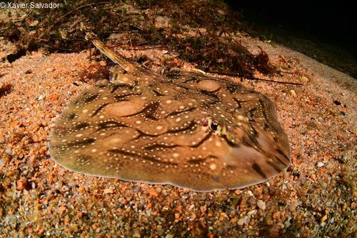

This document introduces you to rminka basic set of tools, and shows you how to apply them to obtain your desired information. Once you’ve installed, read vignette(“rminka”) to learn more.
- Project Queries
Project-related functions will be illustrated using the project Biomarató Tarragona 2025.
●mnk_proj_byname()
Initially, only the project name is known, so a search is performed to retrieve the corresponding project ID. This is done with mnk_proj_byname(). Here we use the query “biomarato 2025”.
prj_names <- mnk_proj_byname("biomarato 2025")
prj_names
#> # A tibble: 5 × 8
#> id title place_id slug created_at updated_at project_type description
#> <int> <chr> <int> <chr> <chr> <chr> <chr> <chr>
#> 1 417 BioMARató… 244 biom… 2025-03-2… 2026-04-1… collection "La BioMAR…
#> 2 418 BioMARató… 245 biom… 2025-03-2… 2026-04-1… collection "La BioMAR…
#> 3 419 BioMARató… 249 biom… 2025-03-2… 2025-10-3… collection "La BioMAR…
#> 4 420 BioMARató… 248 biom… 2025-03-2… 2025-08-2… collection "La BioMAR…
#> 5 424 BioMARato… 701 biom… 2025-04-0… 2025-12-1… collection "Descobre …
# For this example
prj_names[,c(1:2)]
#> # A tibble: 5 × 2
#> id title
#> <int> <chr>
#> 1 417 BioMARató 2025 (Catalunya)
#> 2 418 BioMARató 2025 (Girona)
#> 3 419 BioMARató 2025 (Tarragona)
#> 4 420 BioMARató 2025 (Barcelona)
#> 5 424 BioMARatona 2025●mnk_proj_info()
Once the project ID is known, detailed information can be retrieved with mnk_proj_info(). For the Biomarató Tarragona 2025, the project ID is 419.
prj_info <- mnk_proj_info(419)
prj_info
#> # A tibble: 1 × 7
#> id title created_at subscrib_users place_id slug description
#> <int> <chr> <chr> <int> <int> <chr> <chr>
#> 1 419 BioMARató 2025 (Ta… 2025-03-2… 24 249 biom… La BioMARa…●mnk_proj_user()
Users explicitly subscribed to a project can be retrieved with mnk_proj_user() using the project ID
prj_user <- mnk_proj_user(419)
prj_user
#> # A tibble: 24 × 16
#> id login name created_at observations_count
#> <int> <chr> <chr> <dttm> <int>
#> 1 4 xasalva "xavi salvador c… 2021-04-16 10:44:11 81451
#> 2 6 ramonservitje "" 2022-04-16 15:47:14 1259
#> 3 11 jaume-piera "Jaume Piera" 2022-04-18 15:45:37 11059
#> 4 12 sonialinan NA 2022-04-19 12:53:18 410
#> 5 13 adrisoacha "Karen Soacha" 2022-04-21 09:40:57 578
#> 6 52 joselu_00 "José Luís Guijo… 2022-05-10 13:38:20 404
#> 7 159 jaumesaltiveri "Jaume Saltiveri" 2022-07-17 13:30:45 2
#> 8 166 anomalia "anomalia" 2022-07-19 07:56:08 23
#> 9 197 peixderoca24 "Guillem Mayor S… 2022-08-08 12:58:18 4454
#> 10 219 ealcaniz "Edu Alcaniz" 2022-08-27 15:52:52 27553
#> # ℹ 14 more rows
#> # ℹ 11 more variables: identifications_count <int>, species_count <int>,
#> # activity_count <int>, journal_posts_count <int>, orcid <chr>,
#> # icon_url <chr>, site_id <int>, roles <list>, spam <lgl>, suspended <lgl>,
#> # universal_search_rank <int>Note: The simplest way to retrieve all participants in a project —
including those who are not subscribed — is to download the project’s
observations with mnk_proj_obs() and then extract the
unique values of user_login. Each observation includes the observer’s
login, so the set of distinct logins corresponds to the project’s
participants.
If the project lasts only one year, or if you are only interested in
the participants from a single month, a single function call is
sufficient. For example, project 419 ran in 2025, so all its
observations can be obtained with
mnk_proj_obs(419, year = 2025):
# 1. Download all observations for the project in may 2025
obs_2025 <- mnk_proj_obs(419,year=2025, mont=5, quiet = TRUE)
# 2. Extract the unique participants
participants_may_2025 <- obs_2025 %>%
distinct(user_login) %>%
arrange(user_login)
participants_may_2025
#> # A tibble: 30 × 1
#> user_login
#> <chr>
#> 1 aci
#> 2 albertvim
#> 3 allbluediving
#> 4 bertinhaco
#> 5 biosub
#> 6 elibonfill
#> 7 elisenda_casabona
#> 8 evararo
#> 9 francesca
#> 10 hectorserranocereijo
#> # ℹ 20 more rows●mnk_proj_obs()
Returns all observations for a project within a selected year, and
optionally within a specific month. For the Biomarató Tarragona 2025
(project ID 419), observations for the entire year are obtained with
mnk_proj_obs(419, year = 2025), while observations for a
single month — for example, May — are obtained with
mnk_proj_obs(419, year = 2025, month = 5).
prj_obs <- mnk_proj_obs(419, year= 2025, month=5)
#> --- STARTING DOWNLOAD FOR MONTH: May 2025 ---
#>
#> --- Evaluating month: May 2025 ---
#> The month of May has 1173 records.
#> -> Total <= 10,000. Downloading month in one go...
#>
#> --- FINISHING... ---
#> Download complete! A total of 1,173 records were obtained.
prj_obs[2:14]
#> # A tibble: 1,173 × 13
#> observed_on year month week day hour created_at updated_at latitude
#> <chr> <int> <int> <int> <int> <int> <chr> <chr> <dbl>
#> 1 2025-05-23 2025 5 21 23 11 2026-03-14T12:… 2026-03-1… 41.1
#> 2 2025-05-24 2025 5 21 24 19 2025-10-22T21:… 2025-10-2… 41.2
#> 3 2025-05-24 2025 5 21 24 19 2025-10-22T21:… 2025-10-2… 41.2
#> 4 2025-05-24 2025 5 21 24 19 2025-10-22T21:… 2025-10-2… 41.2
#> 5 2025-05-24 2025 5 21 24 19 2025-10-22T21:… 2025-10-2… 41.2
#> 6 2025-05-24 2025 5 21 24 19 2025-10-22T21:… 2025-10-2… 41.2
#> 7 2025-05-24 2025 5 21 24 19 2025-10-22T21:… 2025-10-2… 41.2
#> 8 2025-05-24 2025 5 21 24 19 2025-10-22T21:… 2025-11-0… 41.2
#> 9 2025-05-24 2025 5 21 24 18 2025-10-22T21:… 2025-10-2… 41.2
#> 10 2025-05-24 2025 5 21 24 18 2025-10-22T21:… 2025-10-2… 41.2
#> # ℹ 1,163 more rows
#> # ℹ 4 more variables: longitude <dbl>, positional_accuracy <int>,
#> # geoprivacy <chr>, obscured <lgl>●mnk_user_byname()
Initially, only an approximate name is known, so a search is performed to retrieve the corresponding user_login. For this example, we start with the query “xavi”, which returns a list of possible logins. The desired user — Xavier Salvador — is then selected from that list.
user_name <- mnk_user_byname("xavi")
user_name
#> # A tibble: 6 × 5
#> id login name observations_count created_at
#> <int> <chr> <chr> <int> <dttm>
#> 1 47 xavi NA 6 2022-05-06 10:47:06
#> 2 4 xasalva "xavi salvador… 81451 2021-04-16 10:44:11
#> 3 1178 xparellada "Xavier Parell… 670 2023-10-31 09:07:52
#> 4 857 xavibou "Xavi Bou" 1083 2023-07-28 13:27:50
#> 5 1042 xavi-de-yzaguirre "" 459 2023-09-26 13:18:42
#> 6 17242 xavisanjuan NA 390 2025-07-20 16:21:42●mnk_user_info()
Once the user ID is known, detailed information can be retrieved with mnk_user_info(). For Xavier Salvador (login “xasalva”), the user ID is 4
user_info <- mnk_user_info(4)
user_info
#> # A tibble: 1 × 16
#> id login name created_at observations_count identifications_count
#> <int> <chr> <chr> <dttm> <int> <int>
#> 1 4 xasa… xavi… 2021-04-16 10:44:11 81451 412139
#> # ℹ 10 more variables: species_count <int>, activity_count <int>,
#> # journal_posts_count <int>, orcid <chr>, icon_url <chr>, site_id <int>,
#> # roles <list>, spam <lgl>, suspended <lgl>, universal_search_rank <int>●mnk_user_proj()
mnk_user_proj() returns the projects to which a user is explicitly
subscribed, given the user ID. For Xavier Salvador (user ID 4), the list
is obtained with mnk_user_proj(4).
Note: Projects in which a user has contributed observations but is not formally subscribed cannot be retrieved directly in R.
user_project <- mnk_user_proj(4)
user_project
#> # A tibble: 10 × 7
#> id title description slug icon place_id created_at
#> <int> <chr> <chr> <chr> <chr> <int> <chr>
#> 1 522 (Principal) Biodiverciutat… "Aquest pr… prin… http… NA 2025-10-2…
#> 2 144 ANERIS - Biodiversitat D.C… "El projec… aner… http… 337 2023-06-0…
#> 3 312 ANERIS - Biodiversitat Llo… "El projec… aner… http… 416 2024-06-1…
#> 4 146 ANERIS - Biodiversitat UNI… "El projec… aner… http… 338 2023-06-0…
#> 5 177 ANERIS - Biodiversitat al … "El projec… aner… http… 361 2023-08-2…
#> 6 183 ANERIS - SASBA (Seguiment … "Descobrim… aner… http… 251 2023-10-0…
#> 7 44 Anthozoos del Barcelonés "Estudi de… anth… http… NA 2022-09-2…
#> 8 444 Arees verdes marines - Emp… "Aquest pr… aree… http… 712 2025-05-2…
#> 9 448 BIODIVERSIDAD MARINA BADIA… "Estudio d… biod… http… 714 2025-05-2…
#> 10 181 BM-PortSalvi "El projec… bm-p… http… 367 2023-09-1…●mnk_user_obs()
Returns all observations for a user within a selected year, and
optionally within a specific month. For Xavier Salvador (user ID 4),
observations for the entire year are obtained with
mnk_user_obs(4, year = 2025), while observations for a
single month, for example May, are obtained with
mnk_user_obs(4, year = 2025, month = 5).
user_obs <- mnk_user_obs(user_id= 4, year = 2025, month = 8)
#> --- STARTING DOWNLOAD FOR MONTH: August 2025 ---
#>
#> --- Evaluating month: August 2025 ---
#> The month of August has 2347 records.
#> -> Total <= 10,000. Downloading month in one go...
#>
#> --- FINISHING... ---
#> Download complete! A total of 2,347 records were obtained.
user_obs
#> # A tibble: 2,347 × 27
#> id observed_on year month week day hour created_at updated_at
#> <int> <chr> <int> <int> <int> <int> <int> <chr> <chr>
#> 1 596411 2025-08-30 2025 8 35 30 12 2025-10-17T10:40… 2025-10-1…
#> 2 596410 2025-08-30 2025 8 35 30 12 2025-10-17T10:40… 2025-10-1…
#> 3 596409 2025-08-30 2025 8 35 30 12 2025-10-17T10:40… 2025-10-1…
#> 4 596408 2025-08-30 2025 8 35 30 12 2025-10-17T10:40… 2025-10-1…
#> 5 596407 2025-08-30 2025 8 35 30 12 2025-10-17T10:40… 2025-10-1…
#> 6 596406 2025-08-30 2025 8 35 30 12 2025-10-17T10:40… 2025-10-1…
#> 7 596405 2025-08-30 2025 8 35 30 12 2025-10-17T10:40… 2025-10-1…
#> 8 596404 2025-08-30 2025 8 35 30 12 2025-10-17T10:40… 2025-10-1…
#> 9 596403 2025-08-30 2025 8 35 30 12 2025-10-17T10:40… 2025-10-1…
#> 10 596402 2025-08-30 2025 8 35 30 12 2025-10-17T10:40… 2025-10-1…
#> # ℹ 2,337 more rows
#> # ℹ 18 more variables: latitude <dbl>, longitude <dbl>,
#> # positional_accuracy <int>, geoprivacy <chr>, obscured <lgl>, uri <chr>,
#> # url_picture <chr>, quality_grade <chr>, taxon_id <int>, taxon_name <chr>,
#> # taxon_rank <chr>, taxon_min_ancestry <chr>, taxon_endemic <lgl>,
#> # taxon_threatened <lgl>, taxon_introduced <lgl>, taxon_native <lgl>,
#> # user_id <int>, user_login <chr>●mnk_place_byname()
Initially, only an approximate place name is known, so a search is performed to retrieve the corresponding place ID. For this example, we start with the query “forum”, which returns a list of possible places. The project actually uses “Piscinas del Forum”, which does not match the initial assumption, so it is recommended to try several searches with different terms until the desired place is identified.
places <- mnk_place_byname("Forum")
places[,1:6]
#> # A tibble: 2 × 6
#> place_id slug name area display_name location_latitud
#> <int> <chr> <chr> <dbl> <chr> <dbl>
#> 1 253 piscinas-del-forum-fecdas Pisc… 4.28e-5 Piscinas de… 41.4
#> 2 257 platja-banys-del-forum Plat… 1.28e-5 Platja Bany… 41.4●mnk_place_sf()
Returns the sf geometry for a place given its place ID. Once the
place ID is known, the geometry can be retrieved with mnk_place_sf().
For Piscinas del Forum, the geometry is obtained with
mnk_place_sf(253).
In the example the geometry is visualized with the leaflet package using the function’s default projection, WGS84 (EPSG:4326), the standard used by Google Maps. Note that the returned sf object already includes the place name as an attribute.
# 1. Downloading the geometry
place <- mnk_place_sf(253)
# 2. Drawing the map
forum_sf <-leaflet(place) %>%
addProviderTiles("OpenStreetMap", group = "OSM") %>%
addProviderTiles("Esri.WorldImagery", group = "Satélite") %>%
addPolygons(
color = "#2c4fb8",
weight = 2,
opacity = 1,
fillOpacity = 0.4,
label = ~name, # information added from previous function
highlightOptions = highlightOptions(weight = 3, bringToFront = TRUE)
) %>%
addLayersControl(baseGroups = c("Satélite", "OSM"))
forum_sf●mnk_places_obs()
Returns all observations recorded within a place within a selected
year, and optionally within a specific month. The result is returned as
a data frame without geometry. For Piscines del Fòrum, observations for
february 2025 are obtained with
mnk_places_obs(place_id, year = 2025, month =2).
Although the output has no geometry, it can be converted to an sf object with the helper function mnk_obs_sf(). The resulting points can then be mapped with the leaflet package.
obs_place <- mnk_place_obs(place_id = 253, year = 2025, month = 2, quiet = TRUE)
obs_place
#> # A tibble: 529 × 27
#> id observed_on year month week day hour created_at updated_at
#> <int> <chr> <int> <int> <int> <int> <int> <chr> <chr>
#> 1 427205 2025-02-19 2025 2 8 19 11 2025-03-19T12:44… 2025-03-1…
#> 2 427204 2025-02-19 2025 2 8 19 12 2025-03-19T12:44… 2025-03-1…
#> 3 427203 2025-02-19 2025 2 8 19 12 2025-03-19T12:44… 2026-01-2…
#> 4 427202 2025-02-19 2025 2 8 19 12 2025-03-19T12:44… 2025-03-1…
#> 5 427201 2025-02-19 2025 2 8 19 12 2025-03-19T12:44… 2025-03-1…
#> 6 427200 2025-02-19 2025 2 8 19 12 2025-03-19T12:44… 2025-03-1…
#> 7 427199 2025-02-19 2025 2 8 19 12 2025-03-19T12:44… 2025-03-1…
#> 8 427198 2025-02-19 2025 2 8 19 12 2025-03-19T12:44… 2025-03-1…
#> 9 427197 2025-02-19 2025 2 8 19 11 2025-03-19T12:44… 2025-03-1…
#> 10 427196 2025-02-19 2025 2 8 19 11 2025-03-19T12:44… 2025-03-1…
#> # ℹ 519 more rows
#> # ℹ 18 more variables: latitude <dbl>, longitude <dbl>,
#> # positional_accuracy <int>, geoprivacy <chr>, obscured <lgl>, uri <chr>,
#> # url_picture <chr>, quality_grade <chr>, taxon_id <int>, taxon_name <chr>,
#> # taxon_rank <chr>, taxon_min_ancestry <chr>, taxon_endemic <lgl>,
#> # taxon_threatened <lgl>, taxon_introduced <lgl>, taxon_native <lgl>,
#> # user_id <int>, user_login <chr>
#Turning the dataframe into an sf object with the mnk_obs_sf() function
obs_sf <- mnk_obs_sf(obs_place,"id","taxon_name","observed_on", "url_picture", "uri", "user_login")
# Preparing the obtained data for later display in the marker popup
popup_final <- paste0( "ID: <a href='", obs_sf$uri,
"' target='_blank'>",obs_sf$id , "</a><br>",
"Specie:", obs_sf$taxon_name, "<br>",
"Observer: ", obs_sf$user_login,"<br>",
"Date:", obs_sf$observed_on, "<br>",
"<a href= '", obs_sf$url_picture, "' target='_blank'><img src='",
obs_sf$url_picture,
"' style='margin-top:2px;border-radius:4px;'> </a> ")
#finally plotins
# Only the observations:
leaflet(obs_sf) %>%
addProviderTiles("OpenStreetMap", group = "OSM") %>%
addProviderTiles("Esri.WorldImagery", group = "Satélite") %>%
addMarkers(lng = ~longitude,
lat = ~latitude,
popup = popup_final) %>%
addLayersControl(baseGroups = c("Satélite", "OSM"))
# Observations plus place maping
forum_sf %>%
addMarkers(data = obs_sf, popup = ~popup_final)●mnk_obs_id()
Returns a single observation given its observation ID. This function is seldom used in practice, as observation IDs are not usually known beforehand. For completeness, an observation can be retrieved with mnk_obs_id(id = 553028)
obs_id <- mnk_obs_id(id = 553028)
obs_id
#> # A tibble: 1 × 166
#> quality_grade time_observed_at taxon_geoprivacy annotations uuid id
#> <chr> <chr> <lgl> <list> <chr> <int>
#> 1 research 2025-08-22T12:22:00+0… NA <list [0]> b106… 553028
#> # ℹ 160 more variables: cached_votes_total <int>,
#> # identifications_most_agree <lgl>, species_guess <chr>,
#> # identifications_most_disagree <lgl>, tags <list>,
#> # positional_accuracy <int>, comments_count <int>, site_id <int>,
#> # created_time_zone <chr>, license_code <chr>, observed_time_zone <chr>,
#> # quality_metrics <list>, public_positional_accuracy <int>,
#> # reviewed_by <list>, oauth_application_id <lgl>, flags <list>, …●mnk_obs()
This is the core function of the package. It is highly versatile and
allows searches by project, user, place, date, week number, taxon, or
geographic area. Two important notes apply to all mnk_obs()
calls:
When the query is executed, a message reports the total number of
observations found. If this number exceeds 10,000, only the first 10,000
are downloaded by default. To retrieve all records, set
limit_download = FALSE.
To retrieve only validated records, use
quality = "research".Previous examples have already covered
searches by project, user and place, so here we focus on two cases not
yet shown: a) search by taxon and b) search by bounding box.
-
Taxon search. Observations for the genus Raja and for the
species Raja brachyura during 2025 are obtained with
taxon_name = "Raja"andtaxon_name = "Raja brachyura"respectively.
#In this example don´t show messages in console (quiet= TRUE)
# Get observations for genus Raja in 2025 by user Xavier Salvador ( user_id=4)
obs <- mnk_obs(taxon_name = "Raja", year = 2025, user_id = 4, quiet = TRUE,
quality = "research")
obs # show full dataframe
#> # A tibble: 38 × 27
#> id observed_on year month week day hour created_at updated_at
#> <int> <chr> <int> <int> <int> <int> <int> <chr> <chr>
#> 1 414056 2025-01-24 2025 1 4 24 0 2025-01-29T10:04… 2025-01-2…
#> 2 427152 2025-02-19 2025 2 8 19 20 2025-03-19T10:19… 2025-03-1…
#> 3 427148 2025-02-19 2025 2 8 19 20 2025-03-19T10:19… 2025-03-2…
#> 4 427142 2025-02-19 2025 2 8 19 20 2025-03-19T10:19… 2025-03-1…
#> 5 427141 2025-02-19 2025 2 8 19 20 2025-03-19T10:19… 2025-03-1…
#> 6 427140 2025-02-19 2025 2 8 19 20 2025-03-19T10:19… 2025-03-1…
#> 7 422169 2025-02-27 2025 2 9 27 20 2025-02-28T11:17… 2025-02-2…
#> 8 420087 2025-02-21 2025 2 8 21 15 2025-02-21T15:14… 2025-02-2…
#> 9 429445 2025-03-27 2025 3 13 27 21 2025-03-30T18:52… 2025-03-3…
#> 10 429443 2025-03-26 2025 3 13 26 21 2025-03-30T18:52… 2025-03-3…
#> # ℹ 28 more rows
#> # ℹ 18 more variables: latitude <dbl>, longitude <dbl>,
#> # positional_accuracy <int>, geoprivacy <chr>, obscured <lgl>, uri <chr>,
#> # url_picture <chr>, quality_grade <chr>, taxon_id <int>, taxon_name <chr>,
#> # taxon_rank <chr>, taxon_min_ancestry <chr>, taxon_endemic <lgl>,
#> # taxon_threatened <lgl>, taxon_introduced <lgl>, taxon_native <lgl>,
#> # user_id <int>, user_login <chr>
# Get observations for species Raja brachyura in 2023 by user Xasalva (user_id= 4)
obs_brachyura <- mnk_obs(taxon_name = "Raja brachyura", year = 2023, user_id = 4,
quiet = TRUE, quality = "research")
obs_brachyura[, c(1,2, 10, 11, 16, 27)] # show selected columns
#> # A tibble: 8 × 6
#> id observed_on latitude longitude url_picture user_login
#> <int> <chr> <dbl> <dbl> <chr> <chr>
#> 1 107825 2023-01-20 41.9 3.21 https://minka-sdg.org/attach… xasalva
#> 2 110045 2023-02-17 41.7 2.94 https://minka-sdg.org/attach… xasalva
#> 3 108780 2023-02-01 41.7 2.94 https://minka-sdg.org/attach… xasalva
#> 4 207525 2023-11-25 41.9 3.21 https://minka-sdg.org/attach… xasalva
#> 5 211384 2023-12-21 41.7 2.94 https://minka-sdg.org/attach… xasalva
#> 6 211381 2023-12-20 41.7 2.94 https://minka-sdg.org/attach… xasalva
#> 7 210709 2023-12-16 41.7 2.94 https://minka-sdg.org/attach… xasalva
#> 8 210705 2023-12-16 41.7 2.94 https://minka-sdg.org/attach… xasalvaImages from observations can be visualized and printed using the
magick package and the observation’s url_picture as
follow.
# Get observations for specie Raja undulata in 2022 by user Xasalva (user_id= 4)
obs_undulata <- mnk_obs(taxon_name = "Raja undulata", year = 2022, user_id = 4,
quiet = TRUE, quality = "research")
# select 3rd observation and get picture URL (url_picture)
url_pic_undulata <- as.character(obs_undulata$url_picture[3])
# read image directly from URL
img_undulata <- image_read(url_pic_undulata )
# add copyright caption at top
img_undulata <- image_annotate(
img_undulata,
"© Xavier Salvador",
size = 10,
gravity = "northwest",
color = "white",
)
# display image in the document
img_undulata
-
Bounding-box search. Observations within a rectangular area
are retrieved by supplying the coordinates of the southwest and
northeast corners. For example, to search around Platja de Sant Sebastià
in Barcelona, define the bounding box and pass it to
mnk_obs().
# read shapefile using relative path
shp <- "../inst/extdata/espigo_w.shp"
espigo <- sf::st_read(shp, quiet = TRUE)
# ensure WGS84 for leaflet (standard for web maps)
sf_bounds <- st_transform(espigo, 4326)
# create interactive map
bounds <- leaflet(sf_bounds) %>%
addProviderTiles("Esri.WorldImagery", group = "Satélite") %>%
addProviderTiles("OpenStreetMap", group = "OSM") %>%
addPolygons(
color = "#2c4fb8",
weight = 2,
opacity = 1,
fillOpacity = 0.4,
popup = "Espigo W",
highlightOptions = highlightOptions(weight = 3,
bringToFront =TRUE)) %>%
addLayersControl(baseGroups = c("Satélite", "OSM"))
bounds# display map in document
obs_bounds <- mnk_obs(taxon_name = "Torpedo", year = 2024,
bounds = sf_bounds , quality = "research", quiet = TRUE)
obs_bounds
#> # A tibble: 7 × 27
#> id observed_on year month week day hour created_at updated_at
#> <int> <chr> <int> <int> <int> <int> <int> <chr> <chr>
#> 1 244605 2024-03-22 2024 3 12 22 20 2024-03-24T18:34:… 2024-03-3…
#> 2 244604 2024-03-22 2024 3 12 22 20 2024-03-24T18:34:… 2024-03-3…
#> 3 244594 2024-03-22 2024 3 12 22 20 2024-03-24T18:34:… 2024-03-3…
#> 4 304290 2024-07-20 2024 7 29 20 18 2024-07-20T18:36:… 2024-07-2…
#> 5 301613 2024-07-16 2024 7 29 16 22 2024-07-17T09:30:… 2024-07-2…
#> 6 315533 2024-08-01 2024 8 31 1 9 2024-08-03T09:08:… 2024-08-0…
#> 7 315527 2024-08-01 2024 8 31 1 9 2024-08-03T09:08:… 2024-08-0…
#> # ℹ 18 more variables: latitude <dbl>, longitude <dbl>,
#> # positional_accuracy <int>, geoprivacy <chr>, obscured <lgl>, uri <chr>,
#> # url_picture <chr>, quality_grade <chr>, taxon_id <int>, taxon_name <chr>,
#> # taxon_rank <chr>, taxon_min_ancestry <chr>, taxon_endemic <lgl>,
#> # taxon_threatened <lgl>, taxon_introduced <lgl>, taxon_native <lgl>,
#> # user_id <int>, user_login <chr>
#Turning the dataframe into an sf object with the mnk_obs_sf() function
obs_bounds_sf <- mnk_obs_sf(obs_bounds,"id","taxon_name","observed_on", "url_picture", "uri", "user_login")
# Preparing the obtained data for later display in the marker popup
popup_final_torpedo <- paste0( "ID: <a href='", obs_bounds_sf$uri,
"' target='_blank'>",obs_bounds_sf$id , "</a><br>",
"Specie:", obs_bounds_sf$taxon_name, "<br>",
"Observer: ", obs_bounds_sf$user_login,"<br>",
"Date:", obs_bounds_sf$observed_on, "<br>",
"<a href= '", obs_bounds_sf$url_picture,
"' target='_blank'><img src='",
obs_bounds_sf$url_picture,
"' style='margin-top:2px;border-radius:4px;'> </a> ")
#final plot
bounds %>%
addMarkers(data = obs_bounds_sf, popup = ~popup_final_torpedo)●mnk_obs_byday()
Works like mnk_obs() but uses an explicit date interval
instead of year or month parameters. The interval is defined by:
d1: start date in ‘yyyy-mm-dd’ format d2:
end date in ‘yyyy-mm-dd’ format
- Auxiliary functions
rminka includes helper functions that support the main queries. These include tools to convert observation tables into sf objects for mapping, to resolve taxonomic information, and to prepare data for visualization. They are designed to connect API results directly with standard R workflows for analysis and reporting.